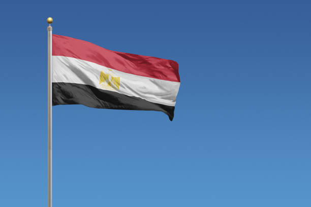
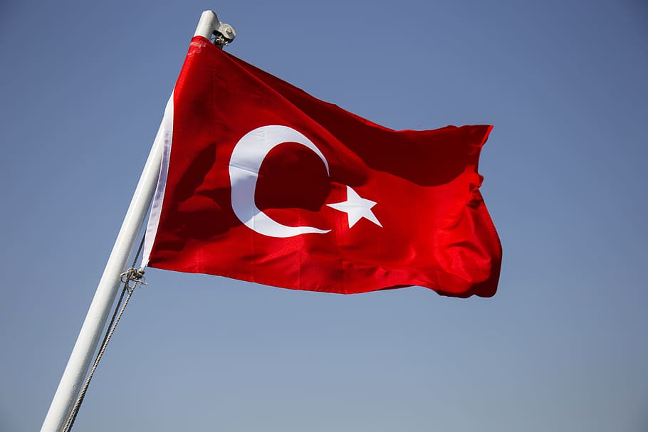
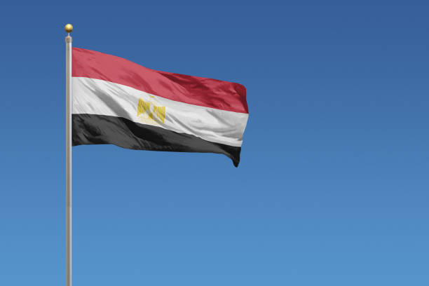
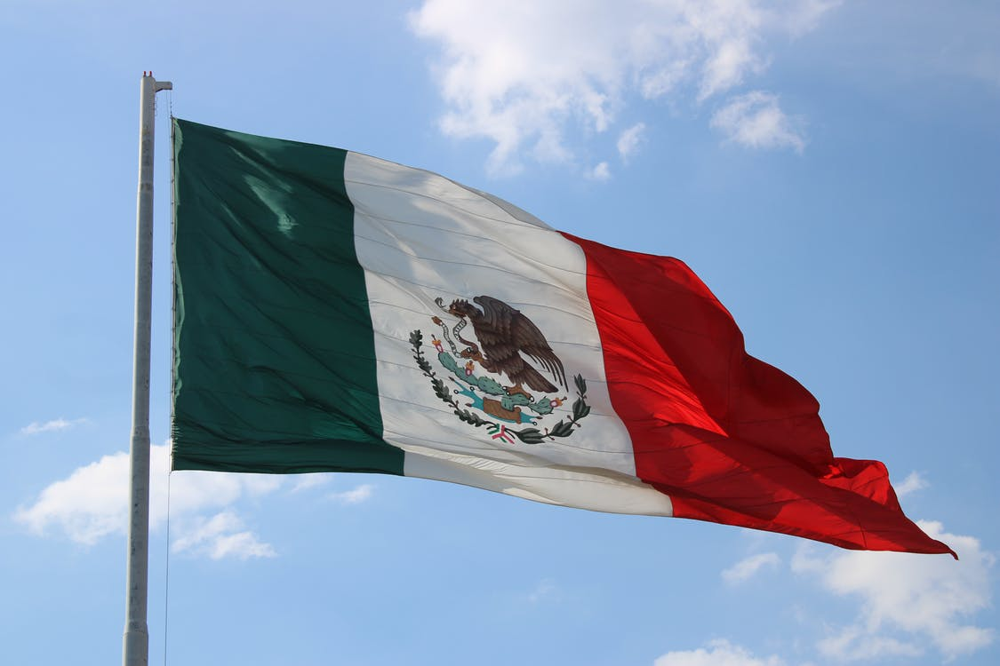
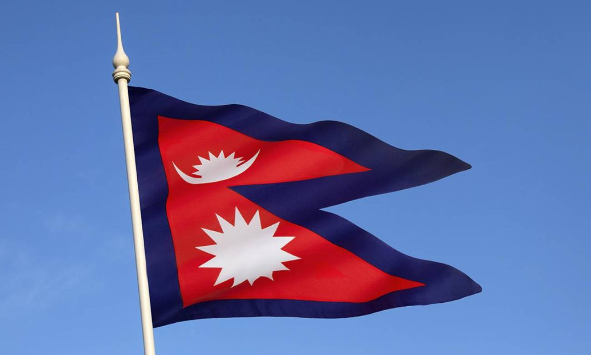

A Turquia é um país enorme, de cultura riquíssima, com paisagens diversas e um vasto território, foi um dos melhores destinos para mochileiros em 2019, é mais fácil circular pela cidade, pois possui placas com informações de línguas, as rotas comuns apresentam também opções diferentes de transportes.
Ao visitar a Turquia o turista encontrará muitas surpresas como encontrar cabras na praia que é muito comum, ruínas pelas estradas, lagos azuis, poder comer em restaurantes sobre as águas de um rio. Turquia é um dos principais pontos de troca e vendas de mercadorias do mundo, um comércio de ótima qualidade onde você pode negociar e fazer preços mais baixos.

O Egito antigo foi uma das civilizações mais antigas do Oriente Médio e da África. A sua vasta cultura e única influenciou as culturas posteriores da Europa. A religião era, em sua grande parte, politeísta, e havia um livro chamado de Livro dos Mortos, acreditavam em vida após a morte , e tinham o costume de praticar a mumificação e preservação dos corpos dos que já morreram.
Nas obras de arte e a literatura estava presente a religiosidade que são elas os seus hinos, textos das pirâmides,a mitologia e os rituais esculpidos em torno dos túmulos dos governantes, templos e monumentos muitos deles bem conservados que pode o turista está visitando ou para quem quiser conhecer.
A culinária egípcia é caracterizada por pratos como kafta que é bem conhecida pelo brasileiro feita de carne de vaca, boi ou cordeiro e costuma ser grelhada no palito e molokhi que é uma espécie de sopa feita com folha triturada de juta e acompanhada com arroz e os grelhados egípcios.

O México é o país latino-americano e bastante visitado por turistas do mundo todo. A cultura mexicana é de origem milenar, rica e diversa, e tem influência de alguns povos pré-colombianos como os astecas, maias, e de espanhóis que foram seus colonizadores. Atualmente a cultura norte-americana exerceu muita influência na cultura mexicana através da globalização que se expandiu pelo mundo por meio de filmes, músicas e do fast-food.
A culinária mexicana tradicional também foi uma combinação das tradições de outros povos como os pratos indígenas e a cozinha espanhola, sendo muito famosa e conhecida por seus pratos de tortillas, Burrito, Nacho e entre outros.Há também uma tradição mexicana que são as festas religiosas, um dessas festas é comemorado o Dia da Virgem de Guadalupe,em 12 de dezembro. Nesta data tão importante milhares de pessoas aproveitam o tempo para adorar a imagem santa na Basílica de Guadalupe, no norte da Cidade do México.
Outra comemoração é o Dia dos Mortos, em honra aos dia dos falecidos e tem uma crença que diz essa celebração as almas são autorizadas a visitar seus parentes vivos e ela ocorre no dia 02 de novembro.
O turismo no Nepal tem crescido nos últimos anos, a cultura no país tem bastante influencia da Índia e há também o sistema de segregação de castas e dada as 12 etnias diferentes, um dos mais famosos são os Nepali e os sherpas. Os povos sherpas habitam nas montanhas do Himalaia,existe alguns filmes e comentários que retratam o modo de vida dos sherpas e a sua resistência ao calor e ao frio de está acostumado com as montanhas.
Os sherpas trabalham carregando material de alpinismo e as malas dos viajantes,durante os seus trekkings nos Himalaias, o pacote de trekkings atrai muitos visitantes pela maior oferta turística. Há também um prato famoso chamado Bhat que na verdade um prato de arroz cozido com uma sopa de lentilhas, que permite acrescentar legumes cozidos da preferênciada pessoa, esse prato é uma refeição típica do Nepal e nepaleses costumam comer a sopa de Bhat uma vez ou mais por dia.